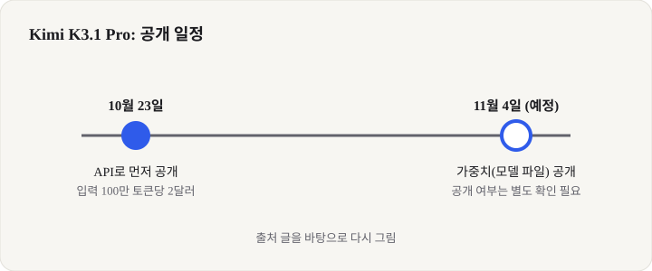
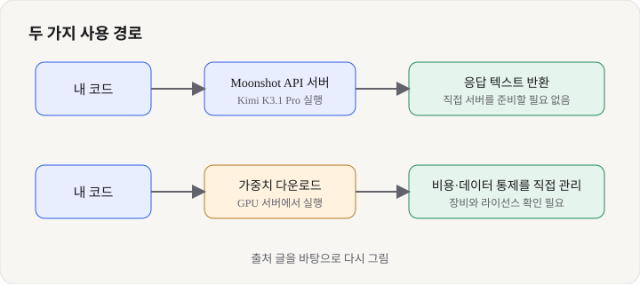

Kimi K3.1 Pro: 100만 토큰을 API로 먼저 열고 가중치 공개를 예고한 중국 모델, 입문 개발자가 알아야 할 것
- 중국 Moonshot AI의 Kimi K3.1 Pro가 10월 23일 API로 공개됐고, 모델 가중치(파일)는 11월 4일 공개하겠다고 예고됐습니다.
- 문맥 창이 100만 토큰이며, 표준 요금은 입력 100만 토큰당 2달러, 출력 100만 토큰당 10달러라고 보도됐습니다.
- 입문 개발자는 API로 긴 코드를 한 번에 넣어 보는 실험을 저렴하게 해 볼 수 있고, 가중치가 열리면 직접 실행해 볼 수도 있습니다.
Moonshot AI가 만든 Kimi 시리즈의 최신 모델이 개발자 커뮤니티에서 다시 주목받고 있습니다. 이유는 두 가지입니다. 하나는 긴 문서나 코드베이스를 한 번에 넣을 수 있는 큰 문맥 창이고, 다른 하나는 모델 파일을 누구나 내려받아 쓸 수 있는 '오픈 웨이트'로 풀겠다는 예고입니다. 다만 이 글을 쓰는 시점에 가중치가 실제로 올라왔는지는 확인하지 못했습니다. 그래서 '이미 발표된 것'과 '예고된 것'을 나눠 적습니다.
01한눈에 보기
모델을 쓸 때 가장 먼저 떠올릴 개념은 '문맥 창'입니다. AI가 한 번에 붙잡고 읽을 수 있는 책상의 넓이라고 생각하면 쉽습니다. Kimi K3.1 Pro는 이 책상이 100만 토큰만큼 넓다고 보도됐습니다. 토큰은 AI가 글을 쪼개 읽는 단위이고, 한국어는 언어와 토크나이저에 따라 글자 수 대비 토큰 수가 달라서 정확한 분량은 실제 측정이 필요합니다. 대략 책 여러 권 분량을 한 번에 넣을 수 있다는 정도로 이해하면 됩니다.

문맥 창: 한 번의 요청에서 모델이 볼 수 있는 입력의 최대 길이입니다.
토큰: 글을 AI가 처리하는 작은 조각 단위이며, 요금도 보통 토큰 수로 계산합니다.
02어떻게 동작하나요
가장 기본적인 사용법은 API입니다. 내 프로그램이 텍스트를 인터넷으로 Moonshot 서버에 보내면, 서버에서 모델이 계산해 답 텍스트를 돌려줍니다. 식당에 주문서를 넣고 음식을 받는 것과 비슷합니다. 직접 주방을 차릴 필요는 없지만, 재료(데이터)가 외부 서버를 거친다는 점을 기억해야 합니다.
가중치가 공개되면 경로가 하나 더 생깁니다. 모델 파일을 내려받아 자기 GPU 서버에서 실행하는 방식입니다. 이 경우 비용은 API 요금 대신 장비 비용으로 바뀌고, 데이터도 외부로 나가지 않습니다. 대신 100만 토큰급 문맥을 감당할 메모리가 많은 장비가 필요합니다. 아래 그림은 두 경로를 나란히 보여 줍니다.

03왜 지금 화제인가요
보도에 따르면 Moonshot은 10월 23일 Kimi K3.1 Pro를 API로 먼저 내놓았습니다. 같은 자료는 Moonshot의 API 퀵스타트 문서를 인용해 가중치 공개일을 11월 4일로 적고 있습니다. 같은 시기 중국에서는 알리바바 Qwen, DeepSeek 등도 오픈 모델을 쏟아내고 있어서, 오픈 웨이트 모델끼리의 경쟁이 빨라지는 흐름 속에 놓인 모델입니다.
04관련 나라·기업
| 구분 | 이름 | 어떤 관련이 있나 |
|---|---|---|
| 기업 | Moonshot AI | Kimi K3.1 Pro를 개발하고 API로 제공하는 중국 AI 회사입니다. |
| 나라 | 중국 | 개발사의 국적입니다. 오픈 웨이트 모델 공개가 활발한 나라 중 하나입니다. |
05기존 방식과 무엇이 다른가
| 비교 항목 | 기존 방식(상용 API 중심) | Kimi K3.1 Pro |
|---|---|---|
| 모델 파일 공개 | 대부분 비공개 | 11월 4일 공개 예고(보도 기준, 공개 여부는 미확인) |
| 문맥 창 | 모델마다 다름 | 100만 토큰(보도 기준) |
| API 요금 | 모델·요금제마다 다름 | 입력 100만 토큰당 2달러, 출력 100만 토큰당 10달러(표준) |
| 직접 실행 | 불가능 | 가중치 공개 후 가능(예정) |
06직접 해 보기
아직 공식 문서에서 명령어와 코드를 직접 확인하지 못했으므로, 이 글에는 코드를 싣지 않았습니다. 대신 순서만 정리합니다.
1단계: 요금표 확인
Moonshot의 공식 가격 페이지에서 입력·출력 요금과 무료 크레딧 여부를 먼저 확인합니다.
2단계: API 키 발급
개발자 콘솔에서 키를 만들고 노출되지 않도록 환경 변수에 보관합니다. 키를 코드에 직접 적지 않는 것이 기본입니다.
3단계: 짧은 질문 하나 보내기
공식 문서의 예제 요청을 그대로 실행해서 응답이 오는지 확인합니다. 긴 문맥 실험은 그다음에 합니다.
4단계: 가중치 공개 확인
가중치가 올라오면 모델 저장소의 모델 카드에서 라이선스, 필요한 메모리, 실행 방법을 읽고 나서 내려받습니다.
07주의할 점과 한계
- 가중치 공개일인 11월 4일에 실제로 파일이 올라왔는지는 이 글 작성 시점에 확인하지 못했습니다.
- 파라미터(모델의 크기) 수는 보도마다 달라서 확정하지 않았습니다. 수치를 쓰기 전에 공식 발표를 다시 확인해야 합니다.
- 벤치마크 점수는 회사 발표와 제3자 평가가 섞여 있어 독립 검증이 끝나기 전까지는 참고용입니다.
- 라이선스 조건은 확인하지 못했습니다. 회사 업무에 쓰기 전에 반드시 확인해야 합니다.
- 가중치를 직접 돌리려면 메모리가 많은 GPU 장비가 필요합니다. 입문 단계에서는 API로 충분합니다.
08정리
Kimi K3.1 Pro의 핵심은 100만 토큰 문맥과 낮은 API 요금, 그리고 가중치 공개 예고입니다. 입문 개발자라면 지금은 API로 짧은 질문부터 해 보고, 긴 문서를 넣어 응답 품질을 직접 비교해 보는 것이 가장 좋은 첫걸음입니다.
가중치가 실제로 공개되면 그때 라이선스와 필요한 장비를 확인하고 직접 실행해 보면 됩니다. 발표된 사실과 예고된 일정을 구분해서 읽는 습관이 이런 소식을 따라갈 때 가장 중요합니다.
09참고한 글
- Moonshot Releases Kimi K3.1 Pro API, Open Weights Due Nov 4 Let's Data Science · 2026.10.23
- AI model releases October 2026 (AIFOD 트래커) AF.NET · 2026.10 월간 목록